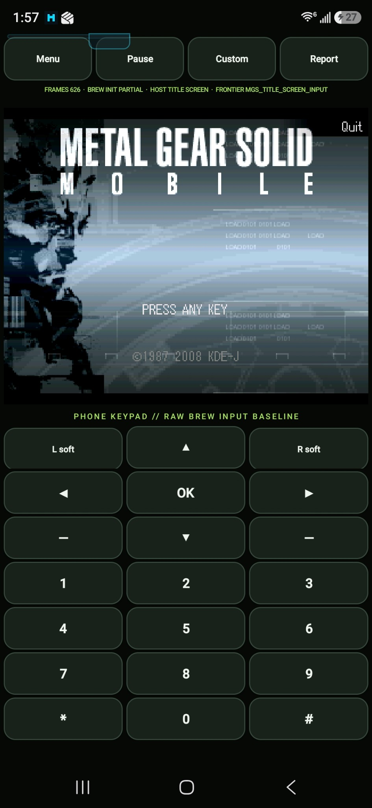
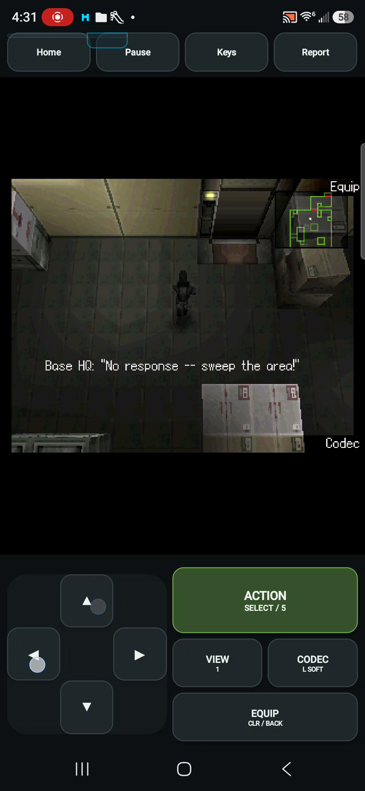

Rush Marine had opened BREW up for us. MGS was mostly a “can I?” with a harder runtime game. I’m still bad at the game, but getting it to run was the part I wanted to find out about.
A harder question
The early package could show its control surfaces before it had a useful ARM32 execution path on the phone. The 0.0.2 report says the runtime is not initialized, the first frame has not been reached and the keypad has no guest event sink yet. The familiar bridge around the game was further along than the game underneath it.T01T03
The interpreter work got us through original startup and resource services to a real Now Loading framebuffer on Android. It was only a loading screen, but it was finally something from the original game I could see on the phone.T04
“dude! i actually saw it this time. lets keeep going forward!”Wakka · October 3, 2026 T02
The following reaction still had a stop in it: “a very faint konami loading screen but stops at that.” The next useful boundary was specific again. The game queried its largest available memory block, subtracted 1,024 bytes, allocated the remainder and freed it. Correcting that contract let the boot path reach the title.T02T05
PRESS ANY KEY

The title is real. At this point, the report still identifies live title-screen input as the next frontier.
Open the image for the full original view.
T15One measured guest key supplied the next move. Key 209 advanced PRESS ANY KEY to the original Camera Test, then Continue to “Attempting to initialize phone camera...” The 0.0.14 bridge exposed that known route before guessing at a full control map.T06
That first useful key turned out to be the left softkey used by the title and camera pages. Later control analysis put the original SELECT action on center OK and kept Codec/left-soft separate. A key that successfully continues one screen does not automatically describe everything Snake should do.T12
The camera followed the game’s original unavailable-hardware path. Reporting the measured failure let that original page update the camera preference and continue into the next stage.T08
The file that kept closing itself
At New Game, we seemed to be missing the room and pool initialization. The selected room stayed empty and the original pools remained null. That gave us a convincing reason to suspect something deep in the engine. The actual mistake was in a much smaller piece of the bridge.T07
The Lua file had simply not survived long enough to finish. The original filesystem callback table placed EOF at index 2 and Close at index 5; the bridge treated them as reversed. Each end-of-file check closed the resource after its first 512-byte read. The rest of the script, including its own SetStart call, never ran.T07
Correcting the callback routing let the original scripts choose FirstFloorUtility and initialize their own data. The host then rendered Snake’s intro, room textures and Codec scene. A separate controlled sequence moved Snake right, then left, with the room and minimap giving that movement somewhere visible to happen.T07T09
Snake on the phone
The phone exposed another gap the earlier host captures had missed. Its audio sink asked the original generator for channel 1, while the old capture host had only demanded channel 0. An undersized descriptor overlapped the PCM buffer, and the nested callback fault was initially reported from the wrong restored location.T10
The following work carried the complete descriptor and tracked real sink consumption. Later physical recordings show Utility Room movement and Codec/menu use with recorded audio. Snake was in a room on the phone, taking input, instead of waiting behind the next startup screen.T10T11

Snake in the original Utility Room, 25 seconds into the 0.0.17 phone recording. This session continues through the slowdown described next.
Open the image for the full original view.
T15A title screen in the wrong place
A later recording began with much more frequent visible scene changes, then slowed sharply after entering the armed first-person view. Returning to third-person did not bring the earlier pace back. The app still accepted controls; it had become slow rather than stopped.T13
A diagnostic image matcher had recognized that gameplay frame as the title screen. The match latched a flag that stayed set, and the interactive worker slept two milliseconds at every later renderer yield. The original software renderer yielded many times while preparing a frame. A small wait, repeated there, had become a substantial part of the work.T13T14
The 0.0.18 repair took title-artwork recognition out of scheduling. Yielding still serviced the original callbacks, but the picture’s resemblance to a title no longer decided whether the runtime should sleep. The phone trace and recorded slowdown had produced a concrete host mechanism to remove.T14
The answer
“im still trash at the game but it runs dude.”Wakka · remembering the harder BREW attempt T01
The later shell keeps the game’s 320×240 image inside the portrait screen I asked for and opens directly into play. That polish has its own candidate to test. The earlier footage already has the answer to my original question: Snake is in a room on my phone, taking input. I’m still trash at the game, but it runs, dude.T11T16
About these records
The “can I?” and skill-at-the-game comments are current owner recollection. Retrieved early messages concern loading, title and camera progress, not an invented first-gameplay reaction. Host room/movement checks, physical 0.0.16/0.0.17 recordings, the 0.0.18 cadence repair and latest 0.0.19 portrait shell retain separate scopes. The video shows cadence collapse; the report identifies the false title match and changed yield mode, without assigning an exact compressed-video frame to a runtime present. Phone speed gains after the repair and current-shell acceptance remain open in these records. The footage does not establish a completed mission or campaign. No original game or bridge was executed or changed while writing this chapter.T17
The receipts
Selected report lines, investigation notes and recorded feedback behind the story. Each receipt keeps its source and context.
T01 / A harder BREW question, and the person playing itOwner recollection
Source: Wakka / archive conversation / October 30, 2026
Current retrospective wording, retaining spelling. It supplies the motive and remembered experience, not an invented contemporaneous first-gameplay quote.
“MGS honeslty was more or less a can i? when i game to harder Brew runtime games. im still trash at the game but it runs dude.”
T02 / The loading screen was worth a reactionConversation excerpts
Source: Wakka / Metal Gear Solid Mobile BREW conversations / October 3–4, 2026
Retrieved owner-message excerpts, retaining wording. UTC timestamps are converted to Iowa local dates. The last excerpt discusses the roughly 0.0.14 camera/loading stage, not a later first-room gameplay acceptance.
October 3, 21:34:31 CDT — “dude! i actually saw it this time. lets keeep going forward!” October 3, 23:19:28 CDT — “much better. we even get into a very faint konami loading screen but stops at that. lets gooooo” October 4, 10:01:48 CDT — “still early, but im actually into the game runtime.”
T03 / The controls are present before the guest can executePhone runtime report
Source: MGS_Mobile_Bridge_v0.0.19_PRIVATE_FULL_CHECKPOINT.zip / evidence/v0.0.2/MGS-Mobile-Bridge-v0.0.2-report.txt · selected lines 37–44
ARM32_HOST_EXECUTION = BLOCKED_ON_HOST | No 32-bit ABI advertised by Android ARM32_TRANSLATOR = NOT_INTEGRATED | runtime work resumes after bridge-shell normalization BREW_RUNTIME_INIT = NOT_ATTEMPTED | Requires usable ARM32 execution path plus complete Melange runtime inputs MGS_APPLET_START = NOT_REACHED | Runtime not initialized FIRST_FRAME = NOT_REACHED | Runtime not initialized AUDIO_INIT = NOT_REACHED | Runtime not initialized INPUT_INIT = UI_READY_RUNTIME_NOT_REACHED | Keypad/custom input surfaces exist; no BREW event sink yet FAILURE_FRONTIER = ARM32_GUEST_EXECUTION | Next runtime test: ARM32->ARM64 guest execution layer
T04 / A real Now Loading frame reaches the phonePhone runtime report
Source: MGS_Mobile_Bridge_v0.0.19_PRIVATE_FULL_CHECKPOINT.zip / evidence/v0.0.9-device/MGS-Mobile-Bridge-v0.0.9-report.txt · selected lines 90
FIRST_FRAME = MGS_NOW_LOADING_PRESENT_CAPTURED | guest-authored 320x240 RGB565 loading present is shown in the Android viewport after MGS resource archives are attached
T05 / The memory probe reaches the title, which still needs inputPhone runtime report
Source: MGS_Mobile_Bridge_v0.0.19_PRIVATE_FULL_CHECKPOINT.zip / evidence/v0.0.13-device/MGS-Mobile-Bridge-v0.0.13-report.txt · selected lines 98–100, 2377–2382
S3E_MEMORY_GET_INT_4 = PASS | property=4 serviced as the largest contiguous allocatable heap block; measured MGS caller subtracts 1024, mallocs the remainder, then frees it S3E_SURFACE_PRESENT = PASS | guest called s3eSurfaceShow; presents=626 nonzero_pixels=70639/76800 crc32=36A2BAAD; frame remains displayable even if later execution stops FIRST_FRAME = MGS_TITLE_SCREEN_PRESENT_CAPTURED | guest-authored Metal Gear Solid Mobile title screen with PRESS ANY KEY is shown in the Android viewport [... selected excerpt ...] S3E_HOST_API_DISPATCH = ACTIVE | measured S3E services are serviced and guest execution reaches the software-surface present path BREW_RUNTIME_INIT = PARTIAL_TITLE_SCREEN_PATH | startup, resources, localization, timed splash chain, memory-capacity probe and post-ideaworks loading are crossed into the Metal Gear Solid Mobile title screen MGS_APPLET_START = BOOT_SEQUENCE_TITLE_REACHED | guest has reached its own title screen; full BREW lifecycle/gameplay is still not claimed AUDIO_INIT = DEFERRED_FOR_VISUAL_DISCOVERY | audio capability is deliberately disabled in this probe so renderer bring-up can be isolated INPUT_INIT = TITLE_POLLING_REACHED_LIVE_KEYS_NOT_ATTACHED | MGS is polling s3eKeyboardGetState and the title screen says PRESS ANY KEY; Android keypad-to-guest live state is now the next bridge step FAILURE_FRONTIER = MGS_TITLE_SCREEN_INPUT | Metal Gear Solid Mobile title screen is reached; next unresolved layer is live Android keypad state into s3eKeyboardGetState
T06 / One measured key crosses the next two screensCheckpoint investigation notes
Source: MGS_Mobile_Bridge_v0.0.14_Preservation.zip / ARTIFACT.md · selected lines 3–16
## Purpose First interactive runtime build. Preserve the proven BREW/S3E boot path through the real Metal Gear Solid Mobile title screen, then attach Android touch input to the first independently measured Marmalade guest key. ## Measured input milestone Host input discovery from the exact v0.0.13 state established guest key `209` as a safe action/continue key: - first tap: `PRESS ANY KEY` -> MGS `Camera Test` - second tap: `Continue` -> `Attempting to initialize phone camera... Please wait...` v0.0.14 maps only: - raw keypad `OK` - custom `ACTION / OK` to guest key 209. No other key ID is guessed.
T07 / EOF was closing the Lua file after its first readCheckpoint investigation notes
Source: MGS_Mobile_Bridge_v0.0.19_PRIVATE_FULL_CHECKPOINT.zip / TECHNICAL_HANDOFF_v0.0.15.md · selected lines 15–19
## What actually unblocked New Game The apparent missing room/pool initialization was downstream of a file callback error. The original user-filesystem registration puts **EOF at index2 and Close at index5**. The previous bridge treated these as reversed. Every EOF check therefore closed the Lua resource after its first 512-byte read. The remaining script, including the original `SetStart` call, never ran; current/requested room remained empty, room loading returned unchanged, and the original pools remained NULL. Correcting that callback mapping allowed the original scripts to select/load FirstFloorUtility and initialize their own pools. The fix changes host routing; it does not insert a fabricated room name, scene, model, script result, or game-binary patch. `UserFileSystemContractProbe` passes **778 checks** against the original guest callbacks. Earlier NULL-pool traces are retained as discovery history, not the final runtime frontier.
T08 / The game handles unavailable camera hardware itselfCheckpoint investigation notes
Source: MGS_Mobile_Bridge_v0.0.19_PRIVATE_FULL_CHECKPOINT.zip / TECHNICAL_HANDOFF_v0.0.15.md · selected lines 23–34
| Service | Actual behavior | | --- | --- | | Camera | Property0 reports unavailable; property1 returns measured initialization failure2. The original guest displays its failure page, updates its camera preference, and continues through its own fallback. No Android camera implementation or camera permission is claimed. | | Secure storage | Get/Put success is0. The original opaque settings blob is retained, hashed, and restored with the requested exact size; failures remain errors rather than guessed settings. | | User filesystem | Original all.dz callbacks are copied at registration; Open/Read/EOF/Seek/Tell/Close dispatch to the measured functions. EOF is2, Close is5. Host memory files support the measured read/write/position/EOF path. | | User memory manager | s3eMemorySetUserMemMgr records original malloc/realloc/free callbacks; ordinary memory operations execute those original callbacks. Base allocation services retain their host implementation and avoid recursion into the guest manager. | | Guest heap | A bounded reusable 16MiB arena replaces the nonreclaiming bump model. Host-reserved blocks are distinct from releasable guest blocks. Realloc preserves data; free allows reuse. Memory property2 is total remaining arena bytes; property4 is the largest aligned contiguous free block. | | Zero-byte allocation | The original C++ allocator rejects NULL for zero-length arrays. A zero-byte guest request receives a unique releasable one-byte allocation. The original diagnostic path exposed the remaining-memory property2 requirement while correcting this behavior. | | Keyboard | AnyKey returns an actual active key ID, which the original guest subsequently passes to GetState. KeyboardUpdate snapshots DOWN/PRESSED/RELEASED edges. ClearState clears consumed edges while retaining physical contact ownership. | | Timing/lifecycle | Guest execution remains on MGS-Guest with cooperative yield. Foreground, window focus, and explicit Pause are independent; cancellation remains observable while paused. | | Media | Original guest mixer/generator callbacks run only on the interpreter worker. AndroidAudioHost receives original PCM and asks for bounded new chunks according to playback-head demand. UI lifecycle only changes input flags; the worker handles sink pause/resume/close. | | Display | Original software-rendered 320x240 RGB565 presents are aspect-fit into a retained View/Bitmap/pixel buffer. Latest-frame coalescing avoids a queue of stale display updates. |
T09 / The original Utility Room and Snake movement appear on the hostCheckpoint investigation notes
Source: MGS_Mobile_Bridge_v0.0.19_PRIVATE_FULL_CHECKPOINT.zip / TECHNICAL_HANDOFF_v0.0.15.md · selected lines 7–13
## Proven frontier and limits New Game now loads the original `FirstFloorUtility` room and renders the original 3D Snake intro, room geometry/textures, and first Codec scene. The full `MovementGameplayProbe` run reached **2,923,120,640 interpreter steps**, then ended by requested cancellation without an interpreter fault. Its final arena summary was **3,157,743 live / 13,619,473 free bytes** out of 16MiB. See `evidence/host-v0.0.15-movement/result.txt`, the console trace, and the original frame captures, including `frame-0800.png`. That probe's frame-timed Skip/direction sequence occurred during the intro/Codec flow. Nonzero arrow polls in that run alone do not establish controlled player movement. A separate screen-directed controlled run subsequently reached the playable first utility room: command sequence3 presses **Right11 for12 frames atframe2821**, then sequence5 presses opposite **Left9 for12 frames atframe3351**. Original captures show Snake moving against the room geometry and minimap. CLR79 exits the opening Codec. See `evidence/host-v0.0.15-controlled/verification.txt`, `before-right.png`, `after-right.png`, `after-left.png`, and `commands-log.txt`. The controlled run ends cleanly at configured cancellation after **9,662,954,496 steps**, with **3,157,587 live /13,619,629 free** arena bytes; PCM capture contains8192 samples,8190 nonzero. XYZ vectors were not measured. No completed level, whole-game compatibility, physical-phone frame rate, or speaker playback is established by these host captures. Host restart proof is separate and complete: the original **1,886-byte settings blob** is accepted by guest SecureStorageGet, the original camera preference survives and skips the camera test on restart, presents stop/resume with Pause, and cancellation while paused exits the worker. The restart capture contains **16,384 original PCM samples / 16,378 nonzero** at the host-selected 22,050-Hz rate. See `evidence/host-v0.0.15-restart-lifecycle/verification.txt`.
T10 / The phone asks for an audio channel the old tests missedCheckpoint investigation notes
Source: MGS_Mobile_Bridge_v0.0.19_PRIVATE_FULL_CHECKPOINT.zip / TECHNICAL_HANDOFF_v0.0.16.md · selected lines 5–11, 13–21
## Device failure and coverage gap The supplied Samsung SM-S938U Android16/API36 v15 report records 926 presents followed by `mem-read8-oob-0x000000FC`, 6144 submitted PCM samples and no Android-host failure. The supplied video contains silent decoded AAC. Its heap still has nearly15MB free, so the report does not indicate arena exhaustion. These exact inputs and their checksums remain under `evidence/device-v0.0.15-launch`. The old CapturingMediaHost only demanded channel0 and discarded channel property2. Consequently earlier original-world/PCM tests did not run the channel1 decoder that the production Android sink requested on the phone. The old 16-byte generator descriptor overlapped the adjacent PCM buffer; original decoder0x00173FB5 reads source fields at16/20 and writes EOS at28. The main-loop PC0x0017B08E in v15 was restored after the nested fault, masking the actual callback location. v16 stores nested fault PC/state/registers before restoring the outer execution state. Separate Android startup reasoning is independently reproduced by the sink contract: the old stream buffer was at least4096 mono frames, while demand stopped at3072 queued frames. Android's default API31+ stream start threshold is capacity. That queue can stay in startup underrun; the physical report itself did not record its actual head/threshold, so that precise device-side mechanism remains an inference. The new sink explicitly sets threshold1 on API31+ and measures per-channel head progress. [... selected excerpt ...] ## Current measured audio contracts Read `AUDIO_IMPLEMENTATION_v0.0.16.md` for original disassembly, source units and callback ABI. The descriptor is32 bytes: channel0, destination4, requested count8, mono flag12, original source16, source count20, unused/unconfirmed24 initialized0, output EOS byte28. Final positive PCM is submitted before EOS handling. Original repeat/loop metadata determines whether the source restarts or the sink stops demand and drains. Natural completion is delivered once, after consumed head reaches written samples; no final buffer is thrown away. The original decoder resamples channel source-frequency property1 to global output-frequency property1. Generated AudioTracks therefore use the output rate; changing the source property does not retune already-resampled output. Global output-rate changes retune active generated tracks. Direct static PCM continues using its source rate. Existing source-frequency clamp4k..48k is retained. Channel/master gain application is retained; wider original volume behavior remains a future fidelity concern. Modern steady demand remains1024 samples whenever the lead is below3072; the4096-frame stream buffer reserves one full chunk. Avoid tiny1–3-frame requests as the head advances. API26–30 cannot set the startup threshold, so they prime the effective full buffer. A finite source shorter than capacity is cached only during initial unconsumed startup and uploaded as exact static PCM. Static tracks start in STATE_NO_STATIC_DATA: upload must precede the initialized-state check. No padding or replacement sound is created. Used-channel summaries retain accepted/nonzero/played counts, head, activity, guest pause, EOS, source/output rates, play count and threshold. Global counters retain master volume, lifecycle pause and failures. Accepted nonzero samples establish generated signal; head progress establishes AudioTrack consumption. Neither proves speaker output. Encoded MediaPlayer support remains separate from this original PCM path.
T11 / Original Utility Room movement appears in physical recordingsCheckpoint investigation notes
Source: MGS_Mobile_Bridge_v0.0.19_PRIVATE_FULL_CHECKPOINT.zip / TECHNICAL_HANDOFF_v0.0.17.md · selected lines 7–14
## Phone baseline and performance The supplied v16 Samsung SM-S938U/API36 report remains active with no callback fault or audio-host failure. Both phone recordings show original Utility Room movement and Codec/menu operation with nonzero recorded audio. OCR of the original FRAMES counter measures room presentation around2.5–4.7/s and Codec19.6/s. These recordings/report are separate timelines. Signal measurements do not prove subjective speaker loudness/pitch or flawless playback.
T12 / The first useful OK key was not the final Action mappingCheckpoint investigation notes
Source: MGS_Mobile_Bridge_v0.0.19_PRIVATE_FULL_CHECKPOINT.zip / TECHNICAL_HANDOFF_v0.0.17.md · selected lines 42–59
| Control | Actual guest key | Other context | | --- | --- | --- | | Action / physical center OK | SELECT78; numeric5=18 | Title/menu confirmation; contextual use/fire/punch/grab/crawl/climb | | Movement / look / aim | Left9 Up10 Right11 Down12 | Original numeric4/2/6/8 aliases17/15/19/21 | | View | Numeric1=14 | First/third-person view | | Codec / left soft |209 | Title sound toggle and camera Continue | | Equip / right soft |210 or CLR79 | Back / Codec Skip | | Camera mode toggle |Star77 | Gray/unavailable under original camera fallback | The old bridge center OK209 represented left soft, despite the original help calling the physical center action OK. New raw center OK sends78. The legacy 209 observation constant/convenience helper remains documented for historical probe compatibility; the new UI sends explicit keys. Hash has no measured role and is omitted. The raw deck retains all measured keys including star77. The original default diagonal setting is off; simultaneous directions still reach the original game, which resolves them to one cardinal direction. No eight-way movement or separate fire/crouch key is promised. A dedicated original Game Menu key is unproven; host Pause is kept distinct from guest keys.
T13 / An armed view is mistaken for the title screenCheckpoint investigation notes
Source: MGS_Mobile_Bridge_v0.0.19_PRIVATE_FULL_CHECKPOINT.zip / evidence/device-v0.0.17/FINDINGS.md · selected lines 1–15, 19–23
# v17 physical slowdown baseline The27.49s phone recording visibly slows around13.4–13.8s. Initial moving scenes show14–15 guest-image changes/s; after the transition this falls to3–4/s and stays around4–5/s after returning to third-person. The app continues updating and accepts controls; this is a cadence collapse, not a complete stop. | Video interval | Scene | Guest image changes/s | Recorded video frames/s | | --- | --- | --- | --- | | 0–3s | moving third-person and unarmed VIEW | 14.67 | 60.67 | | 4–6s | third-person before pause | 13.00 | 71.00 | | 11–13s | M9 equipped, first BaseHQ message | 12.00 | 57.00 | | 14–22s | armed gun/laser first-person view | 3.50 | 41.00 | | 22–27s | third-person after leaving VIEW | 4.40 | 52.00 | At12s consecutive visible changes are about0.071–0.090s apart. Changes at13.415→13.756→14.065s establish the slowdown transition; late typical spacing is about0.308s. These are guest-only cropped image changes, not exact guest presents: v17 hides the previous play-screen FRAMES counter. Nominal recording rate120 is independent of game cadence; the1476 encoded frames span27.454s, averaging53.76fps. Multiple pixel-difference thresholds preserve the same late slowdown. Native crop coordinates/method, all decoded timestamps/differences and per-second counts are retained in display-analysis. Timeline from full frames: unarmed VIEW around1–3s remains fast; third-person returns around4s; original Pause menu at6–8s; equipment inventory/M9 selection at8–11s; BaseHQ reports 'All stations report in' around11–13s; armed VIEW begins around13s. 'No response—sweep the area' appears around18s. Returning to third-person around22s does not restore the earlier cadence. Thus first-person alone does not explain the difference. Armed rendering, alert/AI state, accumulated guest work or device execution changes need direct profiling before identifying a cause. [... selected excerpt ...] The retained report is separately RUNNING at7,058,443,812 steps,2713/2714 presents, with no guest callback fault or audio-host failure. Delivery mean4.156ms and native upload mean0.046ms are far below the~300ms late visible-change interval. Lifetime coalescing replaced559 of2714 received frames; it is not known which video segment contained those replacements. Heap remains3,157,603bytes live and13,619,613bytes free. Recorded audio and these healthy aggregate metrics do not support a complete audio/heap/UI failure; they also do not exclude transient scheduling or guest audio callback CPU cost. New report/source evidence identifies a concrete host pacing mechanism: the retained log shows ordinary DeviceYield before presents2652/2653, VIEW key14 press before2654, then VISUAL_SIGNATURE MGS_TITLE_SCREEN at2654 (CRC F41A7220), VIEW release before2655, and subsequent yields labelled paced. This is gameplay in armed VIEW, not the title. The recovered code permanently latches titleScreenCaptured on a broad pixel histogram and sleeps2ms at every later interactive DeviceYield. The key/scene sequence closely matches the recorded armed VIEW transition around13.2s and measured cadence collapse13.4–13.8s. A permanent latch explains why slowdown persists after VIEW is closed. The exact report establishes the false match and changed yield mode. The video cannot be assigned to exact present2654 because it lacks a present counter and is rescaled/H264 compressed. An approximate RGB565 histogram reconstruction did not retain the exact220-luminance predicate match; its CSV/JSON is saved explicitly as a failed exact reconstruction. Do not treat compressed pixels as a CRC or exact guest histogram. This correlation plus the concrete2ms-per-yield branch supports investigating/removing image-dependent pacing; acceptance still needs a deterministic false-signature/yield regression and new phone comparison. Audio timing/render semantics should remain intact.
T14 / Remove the title-artwork sleep from the schedulerCheckpoint investigation notes
Source: MGS_Mobile_Bridge_v0.0.19_PRIVATE_FULL_CHECKPOINT.zip / TECHNICAL_HANDOFF_v0.0.18.md · selected lines 3–34
The v17 phone report identifies a live scheduling defect rather than a stopped guest. At present 2654, immediately after VIEW key 14, a first-person gameplay frame satisfies a broad title-color heuristic. `titleScreenCaptured` then stays true for the rest of the session. The old DeviceYield path sleeps 2 ms whenever that flag is true. This mixes a diagnostic image classifier with execution. The original software renderer yields repeatedly during work. The retained trace samples every 256th yield after the first eight. Ten late sampled markers span 2,304 yields across 50 presents: 46.08 yields/present and 92.16ms of requested sleep/present, excluding guest work and scheduler overshoot. Intervals imply 73.14–128ms added sleep/present. The linked original scheduler callsites include explicit zero requests. Other paths contain positive requests; this release does not expand or claim complete timed/special DeviceYield ABI behavior. The supplied recording independently shows12–15 visible changes/s before the armed-view transition around 13.4s, then 3–4/s and 4–5/s after returning to third person. This is guest-image cadence, not exact presents. Encoded recorder frame rate differs. The hidden present counter and lossy recording prevent assigning exact present 2654 to a video timestamp. The report/code and persistent video behavior strongly agree on the mechanism; they are not a physical v18 benchmark. ## Repair DeviceYield still pumps the original audio callbacks, performs `Thread.yield()`, advances the guest return PC and records the serviced call. It no longer sleeps according to title artwork recognition. Original timer, input, callback ABI, rendering, memory and game binary behavior remain. Title diagnostics use a bounded fingerprint of the original title artwork. The previous matcher scanned 76,800 pixels, boxed colors into a HashSet and could accept lit gameplay scenery. The new recognition is checked against retained original title and non-title scenes. It has no scheduling role.
T15 / From PRESS ANY KEY to Snake in the Utility RoomHistorical phone images
Source: MGS preservation / Screenshot_20261004_015726.jpg + 1000098204.mp4
Images inspected as pixels. The title screenshot is unchanged; the video still is a full original-size decoded frame with no crop, filters or reconstruction. No private text, contact information or machine paths are visible.
0.0.13 original title screenshot: Screenshot_20261004_015726.jpg Image SHA-256: 56bf813e506e15a899948653a10fc99e37b68852885cb6e243bec0ef0f2e9f0b 0.0.17 phone video: 1000098204.mp4 Full decoded frame 1352, PTS 25.008478 seconds: Snake, Utility Room, minimap, original BaseHQ message and controls. This frame is after the recorded slowdown. It does not establish the cadence repair or the later 0.0.19 UI. Source MP4 SHA-256: 8a17cf8aed975b27cbfc975314c9d012912fde50edc42c18a2cb80d788e48c42 Frame SHA-256: af531ad76240a2e020a63ef335dda54c6d365d5717b9c4e9121c441f71953a75
T16 / The latest portrait shell keeps the original key distinctionsCheckpoint summary
Source: MGS_Mobile_Bridge_v0.0.19_PRIVATE_FULL_CHECKPOINT.zip / README_FIRST.txt · selected lines 7–10, 25–31
The old entrance page is retired. Opening MGS enters gameplay directly through its existing MainActivity component. The entire app is PORTRAIT ONLY, as the owner clarified. The original 320x240 game image remains aspect-correct inside the portrait screen. There is no landscape mode or orientation utility. [... selected excerpt ...] ACTION / OK = original SELECT78. Numeric5 remains its separate original18. VIEW / numeric1 =14, CODEC / L SOFT =209, EQUIP / CLEAR =79. Original R SOFT210 remains separate in keypad mode. Guest arrow9/10/11/12 and original digits13..22 are unchanged. *77 is the original camera/key-mode input; the existing unavailable-camera fallback is retained. No unmeasured # mapping is introduced. Control help and host Pause/resume are in utilities. Android system Back cancels/cleans up gameplay and exits to the calling task.
T17 / The new 0.0.19 package has separate phone checksVerification summary
Source: MGS_Mobile_Bridge_v0.0.19_PRIVATE_FULL_CHECKPOINT.zip / FINAL_VERIFICATION.txt · selected lines 51–67
ORIGINAL EXECUTION Current original-game host regression passes the original title and camera prompts, Codec141.12, Utility Room, actual Snake coordinate movement, decoded channel1 nonzero PCM processing, configured cancellation and no guest callback fault. It uses unchanged production AndroidAudioHost with a monotonic silent platform model; it emits no sound and is not physical-phone evidence. See evidence/gameplay-v019/ and evidence/gameplay-v019-run.log. Yield contract passes10759 register/flags/input/count checks; zero-request yield never incurs the removed title-dependent timed wait. See evidence/yield-pacing-v019/. PHYSICAL PHONE ACCEPTANCE STILL PENDING Current APK installation/cold launch, thumb comfort, actual font/display/safe-area fit, original live graphics/audio, saves/Continue, pause/resume, real Downloads export and Omni/caller return require the owner's phone. Host/framework checks are not substituted for those. Later missions/completed levels and hardware camera capture remain unverified. The original unavailable-camera fallback is preserved. Historical v17 phone video/report remain historical evidence.